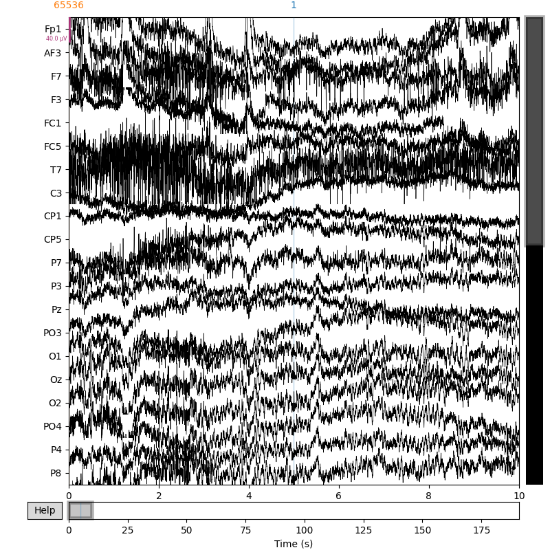

<!DOCTYPE html>

<html>
  <head>
    <meta charset="utf-8" />
    <meta name="viewport" content="width=device-width, initial-scale=1.0" />
    <title>01. Read BIDS datasets &#8212; MNE-BIDS 0.8.dev0 documentation</title>
    
  <link href="../_static/css/theme.css" rel="stylesheet" />
  <link href="../_static/css/index.c5995385ac14fb8791e8eb36b4908be2.css" rel="stylesheet" />

    
  <link rel="stylesheet"
    href="../_static/vendor/fontawesome/5.13.0/css/all.min.css">
  <link rel="preload" as="font" type="font/woff2" crossorigin
    href="../_static/vendor/fontawesome/5.13.0/webfonts/fa-solid-900.woff2">
  <link rel="preload" as="font" type="font/woff2" crossorigin
    href="../_static/vendor/fontawesome/5.13.0/webfonts/fa-brands-400.woff2">

    
    <!-- add `style` or `link` tags with your CSS `@font-face` declarations here -->
    <!-- ... and a `style` tag with setting `font-family` in `body` and `.header-style` -->
    <!-- ... and optionally preload the `woff2` for snappier page loads -->
    <!-- or add a `style` tag with a font fallback chain with good cross-platform coverage -->
    <style>
        body,.header-style {font-family: 'Source Sans Pro', sans-serif;}
        code,kbd,pre,samp {font-family: 'Source Code Pro', monospace;}
    </style>

    <link rel="stylesheet" type="text/css" href="../_static/pygments.css" />
    <link rel="stylesheet" type="text/css" href="../_static/basic.css" />
    <link rel="stylesheet" type="text/css" href="../_static/copybutton.css" />
    <link rel="stylesheet" type="text/css" href="../_static/gallery.css" />
    <link rel="stylesheet" type="text/css" href="../_static/gallery-binder.css" />
    <link rel="stylesheet" type="text/css" href="../_static/gallery-dataframe.css" />
    <link rel="stylesheet" type="text/css" href="../_static/gallery-rendered-html.css" />
    <link rel="stylesheet" type="text/css" href="../_static/style.css" />
    
  <link rel="preload" as="script" href="../_static/js/index.1c5a1a01449ed65a7b51.js">

    <script data-url_root="../" id="documentation_options" src="../_static/documentation_options.js"></script>
    <script src="../_static/jquery.js"></script>
    <script src="../_static/underscore.js"></script>
    <script src="../_static/doctools.js"></script>
    <script src="../_static/clipboard.min.js"></script>
    <script src="../_static/copybutton.js"></script>
    <link rel="index" title="Index" href="../genindex.html" />
    <link rel="search" title="Search" href="../search.html" />
    <link rel="next" title="02. Convert MNE sample data to BIDS format" href="convert_mne_sample.html" />
    <link rel="prev" title="Using MNE-BIDS" href="../use.html" />
    <link rel="canonical" href="https://mne.tools/mne-bids/stable/index.html" />
    <script type="text/javascript" src="../_static/copybutton.js"></script>
    <script type="text/javascript" src="../_static/scrollfix.js"></script>

    <meta name="viewport" content="width=device-width, initial-scale=1" />
    <meta name="docsearch:language" content="en" />
    

  </head>
  <body data-spy="scroll" data-target="#bd-toc-nav" data-offset="80">
    
    <div class="container-fluid" id="banner"></div>

    
    <nav class="navbar navbar-light navbar-expand-lg bg-light fixed-top bd-navbar" id="navbar-main"><div class="container-xl">

  <div id="navbar-start">
    
    
<a class="navbar-brand" href="../index.html">
<p class="title">MNE-BIDS</p>
</a>

    
  </div>

  <button class="navbar-toggler" type="button" data-toggle="collapse" data-target="#navbar-collapsible" aria-controls="navbar-collapsible" aria-expanded="false" aria-label="Toggle navigation">
    <span class="navbar-toggler-icon"></span>
  </button>

  
  <div id="navbar-collapsible" class="col-lg-9 collapse navbar-collapse">
    <div id="navbar-center" class="mr-auto">
      
      <div class="navbar-center-item">
        <ul id="navbar-main-elements" class="navbar-nav">
    <li class="toctree-l1 nav-item">
 <a class="reference internal nav-link" href="../whats_new.html">
  News
 </a>
</li>

<li class="toctree-l1 nav-item">
 <a class="reference internal nav-link" href="../install.html">
  Install
 </a>
</li>

<li class="toctree-l1 current active nav-item">
 <a class="reference internal nav-link" href="../use.html">
  Use
 </a>
</li>

<li class="toctree-l1 nav-item">
 <a class="reference internal nav-link" href="../api.html">
  API
 </a>
</li>

<li class="toctree-l1 nav-item">
 <a class="reference internal nav-link" href="../generated/cli.html">
  CLI
 </a>
</li>

<li class="toctree-l1 nav-item">
 <a class="reference internal nav-link" href="../contribute.html">
  Contribute
 </a>
</li>

    
</ul>
      </div>
      
    </div>

    <div id="navbar-end">
      
      <div class="navbar-end-item">
        <ul id="navbar-icon-links" class="navbar-nav" aria-label="Quick Links">
        <li class="nav-item">
          <a class="nav-link" href="https://github.com/mne-tools/mne-bids" rel="noopener" target="_blank" title="GitHub">
            <span><i class="fab fa-github-square"></i></span>
            <label class="sr-only">GitHub</label>
          </a>
        </li>
        <li class="nav-item">
          <a class="nav-link" href="https://mne.discourse.group/tags/mne-bids" rel="noopener" target="_blank" title="Discourse">
            <span><i class="fab fa-discourse"></i></span>
            <label class="sr-only">Discourse</label>
          </a>
        </li>
      </ul>
      </div>
      
    </div>
  </div>
</div>
    </nav>
    

    <div class="container-xl">
      <div class="row">
          
            
            <!-- Only show if we have sidebars configured, else just a small margin  -->
            <div class="col-12 col-md-3 bd-sidebar"><form class="bd-search d-flex align-items-center" action="../search.html" method="get">
  <i class="icon fas fa-search"></i>
  <input type="search" class="form-control" name="q" id="search-input" placeholder="Search the docs ..." aria-label="Search the docs ..." autocomplete="off" >
</form><nav class="bd-links" id="bd-docs-nav" aria-label="Main navigation">
  <div class="bd-toc-item active">
    <ul class="current nav bd-sidenav">
 <li class="toctree-l1 current active">
  <a class="current reference internal" href="#">
   01. Read BIDS datasets
  </a>
 </li>
</ul>
<ul class="nav bd-sidenav">
 <li class="toctree-l1">
  <a class="reference internal" href="convert_mne_sample.html">
   02. Convert MNE sample data to BIDS format
  </a>
 </li>
</ul>
<ul class="nav bd-sidenav">
 <li class="toctree-l1">
  <a class="reference internal" href="mark_bad_channels.html">
   03. Interactive data inspection and bad channel selection
  </a>
 </li>
</ul>
<ul class="nav bd-sidenav">
 <li class="toctree-l1">
  <a class="reference internal" href="convert_eeg_to_bids.html">
   04. Convert EEG data to BIDS format
  </a>
 </li>
</ul>
<ul class="nav bd-sidenav">
 <li class="toctree-l1">
  <a class="reference internal" href="convert_group_studies.html">
   05. BIDS conversion for group studies
  </a>
 </li>
</ul>
<ul class="nav bd-sidenav">
 <li class="toctree-l1">
  <a class="reference internal" href="rename_brainvision_files.html">
   06. Rename BrainVision EEG data files
  </a>
 </li>
</ul>
<ul class="nav bd-sidenav">
 <li class="toctree-l1">
  <a class="reference internal" href="convert_mri_and_trans.html">
   07. Save and load T1-weighted MRI scan along with anatomical landmarks in BIDS
  </a>
 </li>
</ul>
<ul class="nav bd-sidenav">
 <li class="toctree-l1">
  <a class="reference internal" href="convert_ieeg_to_bids.html">
   08. Convert iEEG data to BIDS format
  </a>
 </li>
</ul>
<ul class="nav bd-sidenav">
 <li class="toctree-l1">
  <a class="reference internal" href="convert_empty_room.html">
   09. Storing empty room data in BIDS format
  </a>
 </li>
</ul>
<ul class="nav bd-sidenav">
 <li class="toctree-l1">
  <a class="reference internal" href="bidspath.html">
   10. An introduction to BIDSPath
  </a>
 </li>
</ul>
<ul class="nav bd-sidenav">
 <li class="toctree-l1">
  <a class="reference internal" href="create_bids_folder.html">
   11. Creating BIDS-compatible folder names and filenames
  </a>
 </li>
</ul>
<ul class="nav bd-sidenav">
 <li class="toctree-l1">
  <a class="reference internal" href="update_bids_datasets.html">
   12. Update BIDS datasets
  </a>
 </li>
</ul>
<ul class="nav bd-sidenav">
 <li class="toctree-l1">
  <a class="reference internal" href="write_modified_files.html">
   13. Writing modified files with MNE-BIDS
  </a>
 </li>
</ul>

  </div>
</nav>
            </div>
            
          

          
          <div class="d-none d-xl-block col-xl-2 bd-toc">
            
              
              <div class="toc-item">
                
<div class="tocsection onthispage pt-5 pb-3">
    <i class="fas fa-list"></i> On this page
</div>

<nav id="bd-toc-nav">
    <ul class="visible nav section-nav flex-column">
 <li class="toc-h2 nav-item toc-entry">
  <a class="reference internal nav-link" href="#imports">
   Imports
  </a>
 </li>
 <li class="toc-h2 nav-item toc-entry">
  <a class="reference internal nav-link" href="#download-a-subject-s-data-from-an-openneuro-bids-dataset">
   Download a subject’s data from an OpenNeuro BIDS dataset
  </a>
 </li>
 <li class="toc-h2 nav-item toc-entry">
  <a class="reference internal nav-link" href="#explore-the-dataset-contents">
   Explore the dataset contents
  </a>
 </li>
 <li class="toc-h2 nav-item toc-entry">
  <a class="reference internal nav-link" href="#prepare-reading-the-data">
   Prepare reading the data
  </a>
 </li>
 <li class="toc-h2 nav-item toc-entry">
  <a class="reference internal nav-link" href="#read-the-data">
   Read the data
  </a>
 </li>
</ul>

</nav>
              </div>
              
              <div class="toc-item">
                
              </div>
              
            
          </div>
          

          
          
            
          
          <main class="col-12 col-md-9 col-xl-7 py-md-5 pl-md-5 pr-md-4 bd-content" role="main">
              
              <div>
                
  <div class="sphx-glr-download-link-note admonition note">
<p class="admonition-title">Note</p>
<p>Click <a class="reference internal" href="#sphx-glr-download-auto-examples-read-bids-datasets-py"><span class="std std-ref">here</span></a>
to download the full example code or to run this example in your browser via Binder</p>
</div>
<div class="sphx-glr-example-title section" id="read-bids-datasets">
<span id="read-bids-datasets-example"></span><span id="sphx-glr-auto-examples-read-bids-datasets-py"></span><h1>01. Read BIDS datasets<a class="headerlink" href="#read-bids-datasets" title="Permalink to this headline">¶</a></h1>
<p>When working with electrophysiological data in the BIDS format, an important
resource is the <a class="reference external" href="https://openneuro.org/">OpenNeuro</a> database. OpenNeuro
works great with MNE-BIDS because every dataset must pass a validator
that tests to ensure its format meets BIDS specifications before the dataset
can be uploaded, so you know the data will work with a script like in this
example without modification.</p>
<p>We have various data types that can be loaded via the <code class="docutils literal notranslate"><span class="pre">read_raw_bids</span></code>
function:</p>
<ul class="simple">
<li><p>MEG</p></li>
<li><p>EEG (scalp electrodes)</p></li>
<li><p>iEEG (ECoG and SEEG)</p></li>
<li><p>the anatomical MRI scan of a study participant</p></li>
</ul>
<p>In this tutorial, we show how <code class="docutils literal notranslate"><span class="pre">read_raw_bids</span></code> can be used to load and
inspect BIDS-formatted data.</p>
<div class="highlight-default notranslate"><div class="highlight"><pre><span></span><span class="c1"># Authors: Adam Li &lt;adam2392@gmail.com&gt;</span>
<span class="c1">#          Richard Höchenberger &lt;richard.hoechenberger@gmail.com&gt;</span>
<span class="c1">#          Alex Rockhill &lt;aprockhill@mailbox.org&gt;</span>
<span class="c1">#</span>
<span class="c1"># License: BSD (3-clause)</span>
</pre></div>
</div>
<div class="section" id="imports">
<h2>Imports<a class="headerlink" href="#imports" title="Permalink to this headline">¶</a></h2>
<p>We are importing everything we need for this example:</p>
<div class="highlight-default notranslate"><div class="highlight"><pre><span></span><span class="kn">import</span> <span class="nn">os</span>
<span class="kn">import</span> <span class="nn">os.path</span> <span class="k">as</span> <span class="nn">op</span>
<span class="kn">import</span> <span class="nn">openneuro</span>

<span class="kn">from</span> <span class="nn">mne.datasets</span> <span class="kn">import</span> <span class="n">sample</span>
<span class="kn">from</span> <span class="nn">mne_bids</span> <span class="kn">import</span> <a href="../generated/mne_bids.BIDSPath.html#mne_bids.BIDSPath" title="mne_bids.BIDSPath" class="sphx-glr-backref-module-mne_bids sphx-glr-backref-type-py-class"><span class="n">BIDSPath</span></a><span class="p">,</span> <a href="../generated/mne_bids.read_raw_bids.html#mne_bids.read_raw_bids" title="mne_bids.read_raw_bids" class="sphx-glr-backref-module-mne_bids sphx-glr-backref-type-py-function"><span class="n">read_raw_bids</span></a><span class="p">,</span> <a href="../generated/mne_bids.print_dir_tree.html#mne_bids.print_dir_tree" title="mne_bids.print_dir_tree" class="sphx-glr-backref-module-mne_bids sphx-glr-backref-type-py-function"><span class="n">print_dir_tree</span></a><span class="p">,</span> <a href="../generated/mne_bids.make_report.html#mne_bids.make_report" title="mne_bids.make_report" class="sphx-glr-backref-module-mne_bids sphx-glr-backref-type-py-function"><span class="n">make_report</span></a>
</pre></div>
</div>
</div>
<div class="section" id="download-a-subject-s-data-from-an-openneuro-bids-dataset">
<h2>Download a subject’s data from an OpenNeuro BIDS dataset<a class="headerlink" href="#download-a-subject-s-data-from-an-openneuro-bids-dataset" title="Permalink to this headline">¶</a></h2>
<p>Download the data, storing each in a <code class="docutils literal notranslate"><span class="pre">target_dir</span></code> target directory, which,
in <code class="docutils literal notranslate"><span class="pre">mne-bids</span></code> terminology, is the <em class="xref py py-obj">root</em> of each BIDS dataset. This example
uses this <a class="reference external" href="https://openneuro.org/datasets/ds002778">EEG dataset</a> of
resting-state recordings of patients with Parkinson’s disease.</p>
<div class="highlight-default notranslate"><div class="highlight"><pre><span></span><span class="c1"># .. note: If the keyword argument include is left out of</span>
<span class="c1">#          ``openneuro.download``, the whole dataset will be downloaded.</span>
<span class="c1">#          We&#39;re just using data from one subject to reduce the time</span>
<span class="c1">#          it takes to run the example.</span>

<a href="https://docs.python.org/3/library/stdtypes.html#str" title="builtins.str" class="sphx-glr-backref-module-builtins sphx-glr-backref-type-py-class sphx-glr-backref-instance"><span class="n">dataset</span></a> <span class="o">=</span> <span class="s1">&#39;ds002778&#39;</span>
<a href="https://docs.python.org/3/library/stdtypes.html#str" title="builtins.str" class="sphx-glr-backref-module-builtins sphx-glr-backref-type-py-class sphx-glr-backref-instance"><span class="n">subject</span></a> <span class="o">=</span> <span class="s1">&#39;pd6&#39;</span>

<span class="c1"># Download one subject&#39;s data from each dataset</span>
<a href="https://docs.python.org/3/library/stdtypes.html#str" title="builtins.str" class="sphx-glr-backref-module-builtins sphx-glr-backref-type-py-class sphx-glr-backref-instance"><span class="n">bids_root</span></a> <span class="o">=</span> <a href="https://docs.python.org/3/library/os.path.html#os.path.join" title="os.path.join" class="sphx-glr-backref-module-os-path sphx-glr-backref-type-py-function"><span class="n">op</span><span class="o">.</span><span class="n">join</span></a><span class="p">(</span><a href="https://docs.python.org/3/library/os.path.html#os.path.dirname" title="os.path.dirname" class="sphx-glr-backref-module-os-path sphx-glr-backref-type-py-function"><span class="n">op</span><span class="o">.</span><span class="n">dirname</span></a><span class="p">(</span><a href="https://mne.tools/dev/generated/mne.datasets.sample.data_path.html#mne.datasets.sample.data_path" title="mne.datasets.sample.data_path" class="sphx-glr-backref-module-mne-datasets-sample sphx-glr-backref-type-py-function"><span class="n">sample</span><span class="o">.</span><span class="n">data_path</span></a><span class="p">()),</span> <a href="https://docs.python.org/3/library/stdtypes.html#str" title="builtins.str" class="sphx-glr-backref-module-builtins sphx-glr-backref-type-py-class sphx-glr-backref-instance"><span class="n">dataset</span></a><span class="p">)</span>
<span class="k">if</span> <span class="ow">not</span> <a href="https://docs.python.org/3/library/os.path.html#os.path.isdir" title="os.path.isdir" class="sphx-glr-backref-module-os-path sphx-glr-backref-type-py-function"><span class="n">op</span><span class="o">.</span><span class="n">isdir</span></a><span class="p">(</span><a href="https://docs.python.org/3/library/stdtypes.html#str" title="builtins.str" class="sphx-glr-backref-module-builtins sphx-glr-backref-type-py-class sphx-glr-backref-instance"><span class="n">bids_root</span></a><span class="p">):</span>
    <a href="https://docs.python.org/3/library/os.html#os.makedirs" title="os.makedirs" class="sphx-glr-backref-module-os sphx-glr-backref-type-py-function"><span class="n">os</span><span class="o">.</span><span class="n">makedirs</span></a><span class="p">(</span><a href="https://docs.python.org/3/library/stdtypes.html#str" title="builtins.str" class="sphx-glr-backref-module-builtins sphx-glr-backref-type-py-class sphx-glr-backref-instance"><span class="n">bids_root</span></a><span class="p">)</span>

<span class="n">openneuro</span><span class="o">.</span><span class="n">download</span><span class="p">(</span><a href="https://docs.python.org/3/library/stdtypes.html#str" title="builtins.str" class="sphx-glr-backref-module-builtins sphx-glr-backref-type-py-class sphx-glr-backref-instance"><span class="n">dataset</span></a><span class="o">=</span><a href="https://docs.python.org/3/library/stdtypes.html#str" title="builtins.str" class="sphx-glr-backref-module-builtins sphx-glr-backref-type-py-class sphx-glr-backref-instance"><span class="n">dataset</span></a><span class="p">,</span> <span class="n">target_dir</span><span class="o">=</span><a href="https://docs.python.org/3/library/stdtypes.html#str" title="builtins.str" class="sphx-glr-backref-module-builtins sphx-glr-backref-type-py-class sphx-glr-backref-instance"><span class="n">bids_root</span></a><span class="p">,</span>
                   <span class="n">include</span><span class="o">=</span><span class="p">[</span><span class="sa">f</span><span class="s1">&#39;sub-</span><span class="si">{</span><a href="https://docs.python.org/3/library/stdtypes.html#str" title="builtins.str" class="sphx-glr-backref-module-builtins sphx-glr-backref-type-py-class sphx-glr-backref-instance"><span class="n">subject</span></a><span class="si">}</span><span class="s1">&#39;</span><span class="p">])</span>
</pre></div>
</div>
<p class="sphx-glr-script-out">Out:</p>
<div class="sphx-glr-script-out highlight-none notranslate"><div class="highlight"><pre><span></span>Using default location ~/mne_data for sample...
Attempting to create new mne-python configuration file:
/home/circleci/.mne/mne-python.json

Hello! This is openneuro-py 2021.8. Great to see you!

      Please report problems and bugs at
      https://github.com/hoechenberger/openneuro-py/issues

Preparing to download ds002778 ...
Retrieving up to 19 files (5 concurrent downloads).

Skipping CHANGES: already downloaded.: 100%|##########| 269/269 [00:00&lt;?, ?B/s]


Skipping participants.json: already downloaded.: 100%|##########| 1.24k/1.24k [00:00&lt;?, ?B/s]


Skipping README: already downloaded.: 100%|##########| 4.38k/4.38k [00:00&lt;?, ?B/s]


Skipping dataset_description.json: already downloaded.: 100%|##########| 350/350 [00:00&lt;?, ?B/s]


Skipping participants.tsv: already downloaded.: 100%|##########| 1.62k/1.62k [00:00&lt;?, ?B/s]


Skipping sub-pd6_ses-off_task-rest_beh.json: already downloaded.: 100%|##########| 436/436 [00:00&lt;?, ?B/s]


Skipping sub-pd6_ses-off_task-rest_events.tsv: already downloaded.: 100%|##########| 66.0/66.0 [00:00&lt;?, ?B/s]


Skipping sub-pd6_ses-on_task-rest_beh.json: already downloaded.: 100%|##########| 433/433 [00:00&lt;?, ?B/s]


Skipping sub-pd6_ses-off_scans.tsv: already downloaded.: 100%|##########| 75.0/75.0 [00:00&lt;?, ?B/s]


Skipping sub-pd6_ses-on_task-rest_channels.tsv: already downloaded.: 100%|##########| 2.22k/2.22k [00:00&lt;?, ?B/s]


Skipping sub-pd6_ses-on_task-rest_eeg.json: already downloaded.: 100%|##########| 471/471 [00:00&lt;?, ?B/s]


Skipping sub-pd6_ses-on_scans.tsv: already downloaded.: 100%|##########| 74.0/74.0 [00:00&lt;?, ?B/s]


Skipping sub-pd6_ses-on_task-rest_events.tsv: already downloaded.: 100%|##########| 51.0/51.0 [00:00&lt;?, ?B/s]


Re-downloading sub-pd6_ses-off_task-rest_channels.tsv: file size mismatch.: 0.00B [00:00, ?B/s]


Re-downloading sub-pd6_ses-off_task-rest_eeg.json: file size mismatch.: 0.00B [00:00, ?B/s]

Re-downloading sub-pd6_ses-on_task-rest_beh.tsv: file size mismatch.: 0.00B [00:00, ?B/s]


Re-downloading sub-pd6_ses-off_task-rest_beh.tsv: file size mismatch.: 0.00B [00:00, ?B/s]


Skipping sub-pd6_ses-off_task-rest_eeg.bdf: already downloaded.: 100%|##########| 11.5M/11.5M [00:00&lt;?, ?B/s]


                                                                                         


                                                                                          
Skipping sub-pd6_ses-on_task-rest_eeg.bdf: already downloaded.: 100%|##########| 17.4M/17.4M [00:00&lt;?, ?B/s]

Finished downloading ds002778.

Please enjoy your brains.
</pre></div>
</div>
</div>
<div class="section" id="explore-the-dataset-contents">
<h2>Explore the dataset contents<a class="headerlink" href="#explore-the-dataset-contents" title="Permalink to this headline">¶</a></h2>
<p>We can use MNE-BIDS to print a tree of all
included files and folders. We pass the <code class="docutils literal notranslate"><span class="pre">max_depth</span></code> parameter to
<a class="reference internal" href="../generated/mne_bids.print_dir_tree.html#mne_bids.print_dir_tree" title="mne_bids.print_dir_tree"><code class="xref py py-obj docutils literal notranslate"><span class="pre">mne_bids.print_dir_tree</span></code></a> to the output to four levels of folders, for
better readability in this example.</p>
<div class="highlight-default notranslate"><div class="highlight"><pre><span></span><a href="../generated/mne_bids.print_dir_tree.html#mne_bids.print_dir_tree" title="mne_bids.print_dir_tree" class="sphx-glr-backref-module-mne_bids sphx-glr-backref-type-py-function"><span class="n">print_dir_tree</span></a><span class="p">(</span><a href="https://docs.python.org/3/library/stdtypes.html#str" title="builtins.str" class="sphx-glr-backref-module-builtins sphx-glr-backref-type-py-class sphx-glr-backref-instance"><span class="n">bids_root</span></a><span class="p">,</span> <span class="n">max_depth</span><span class="o">=</span><span class="mi">4</span><span class="p">)</span>
</pre></div>
</div>
<p class="sphx-glr-script-out">Out:</p>
<div class="sphx-glr-script-out highlight-none notranslate"><div class="highlight"><pre><span></span>|ds002778/
|--- CHANGES
|--- README
|--- dataset_description.json
|--- participants.json
|--- participants.tsv
|--- sub-pd6/
|------ ses-off/
|--------- sub-pd6_ses-off_scans.tsv
|--------- beh/
|------------ sub-pd6_ses-off_task-rest_beh.json
|------------ sub-pd6_ses-off_task-rest_beh.tsv
|--------- eeg/
|------------ sub-pd6_ses-off_task-rest_channels.tsv
|------------ sub-pd6_ses-off_task-rest_eeg.bdf
|------------ sub-pd6_ses-off_task-rest_eeg.json
|------------ sub-pd6_ses-off_task-rest_events.tsv
|------ ses-on/
|--------- sub-pd6_ses-on_scans.tsv
|--------- beh/
|------------ sub-pd6_ses-on_task-rest_beh.json
|------------ sub-pd6_ses-on_task-rest_beh.tsv
|--------- eeg/
|------------ sub-pd6_ses-on_task-rest_channels.tsv
|------------ sub-pd6_ses-on_task-rest_eeg.bdf
|------------ sub-pd6_ses-on_task-rest_eeg.json
|------------ sub-pd6_ses-on_task-rest_events.tsv
</pre></div>
</div>
<p>We can even ask MNE-BIDS to produce a human-readbale summary report
on the dataset contents.</p>
<div class="highlight-default notranslate"><div class="highlight"><pre><span></span><span class="nb">print</span><span class="p">(</span><a href="../generated/mne_bids.make_report.html#mne_bids.make_report" title="mne_bids.make_report" class="sphx-glr-backref-module-mne_bids sphx-glr-backref-type-py-function"><span class="n">make_report</span></a><span class="p">(</span><a href="https://docs.python.org/3/library/stdtypes.html#str" title="builtins.str" class="sphx-glr-backref-module-builtins sphx-glr-backref-type-py-class sphx-glr-backref-instance"><span class="n">bids_root</span></a><span class="p">))</span>
</pre></div>
</div>
<p class="sphx-glr-script-out">Out:</p>
<div class="sphx-glr-script-out highlight-none notranslate"><div class="highlight"><pre><span></span>Summarizing participants.tsv /home/circleci/mne_data/ds002778/participants.tsv...
Summarizing scans.tsv files [PosixPath(&#39;/home/circleci/mne_data/ds002778/sub-pd6/ses-off/sub-pd6_ses-off_scans.tsv&#39;), PosixPath(&#39;/home/circleci/mne_data/ds002778/sub-pd6/ses-on/sub-pd6_ses-on_scans.tsv&#39;)]...
The participant template found: comprised of 14 male and 17 female participants;
comprised of 31 right hand, 0 left hand and 0 ambidextrous; ages ranged from 47.0 to 82.0 (mean = 63.39, std = 8.69)
The UC San Diego Resting State EEG Data from Patients with Parkinson&#39;s Disease
dataset was created by Alexander P. Rockhill, Nicko Jackson, Jobi George, Adam
Aron, and Nicole C. Swann and conforms to BIDS version 1.2.2. This report was
generated with MNE-BIDS (https://doi.org/10.21105/joss.01896). The dataset
consists of 1 participants (comprised of 14 male and 17 female participants;
comprised of 31 right hand, 0 left hand and 0 ambidextrous; ages ranged from
47.0 to 82.0 (mean = 63.39, std = 8.69)) and 2 recording sessions: off, and on.
Data was recorded using a EEG system (Biosemi manufacturer) sampled at 512.0 Hz
with line noise at 60, and 50 Hz. There were 2 scans in total. Recording
durations ranged from 191.0 to 289.0 seconds (mean = 240.0, std = 49.0), for a
total of 480.0 seconds of data recorded over all scans. For each dataset, there
were on average 41.0 (std = 0.0) recording channels per scan, out of which 41.0
(std = 0.0) were used in analysis (0.0 +/- 0.0 were removed from analysis).
</pre></div>
</div>
<p>Now it’s time to get ready for reading some of the data! First, we need to
create an <a class="reference internal" href="../generated/mne_bids.BIDSPath.html#mne_bids.BIDSPath" title="mne_bids.BIDSPath"><code class="xref py py-class docutils literal notranslate"><span class="pre">mne_bids.BIDSPath</span></code></a>, which is the workhorse object of
MNE-BIDS when it comes to file and folder operations.</p>
<p>For now, we’re interested only in the EEG data in the BIDS root directory
of the Parkinson’s disease patient dataset. There were two sessions, one
where the patients took their regular anti-Parkinsonian medications and
one where they abstained for more than twelve hours. Let’s start with the
off-medication session.</p>
<div class="highlight-default notranslate"><div class="highlight"><pre><span></span><a href="https://docs.python.org/3/library/stdtypes.html#str" title="builtins.str" class="sphx-glr-backref-module-builtins sphx-glr-backref-type-py-class sphx-glr-backref-instance"><span class="n">datatype</span></a> <span class="o">=</span> <span class="s1">&#39;eeg&#39;</span>
<a href="https://docs.python.org/3/library/stdtypes.html#str" title="builtins.str" class="sphx-glr-backref-module-builtins sphx-glr-backref-type-py-class sphx-glr-backref-instance"><span class="n">session</span></a> <span class="o">=</span> <span class="s1">&#39;off&#39;</span>
<a href="../generated/mne_bids.BIDSPath.html#mne_bids.BIDSPath" title="mne_bids.BIDSPath" class="sphx-glr-backref-module-mne_bids sphx-glr-backref-type-py-class sphx-glr-backref-instance"><span class="n">bids_path</span></a> <span class="o">=</span> <a href="../generated/mne_bids.BIDSPath.html#mne_bids.BIDSPath" title="mne_bids.BIDSPath" class="sphx-glr-backref-module-mne_bids sphx-glr-backref-type-py-class"><span class="n">BIDSPath</span></a><span class="p">(</span><span class="n">root</span><span class="o">=</span><a href="https://docs.python.org/3/library/stdtypes.html#str" title="builtins.str" class="sphx-glr-backref-module-builtins sphx-glr-backref-type-py-class sphx-glr-backref-instance"><span class="n">bids_root</span></a><span class="p">,</span> <a href="https://docs.python.org/3/library/stdtypes.html#str" title="builtins.str" class="sphx-glr-backref-module-builtins sphx-glr-backref-type-py-class sphx-glr-backref-instance"><span class="n">session</span></a><span class="o">=</span><a href="https://docs.python.org/3/library/stdtypes.html#str" title="builtins.str" class="sphx-glr-backref-module-builtins sphx-glr-backref-type-py-class sphx-glr-backref-instance"><span class="n">session</span></a><span class="p">,</span> <a href="https://docs.python.org/3/library/stdtypes.html#str" title="builtins.str" class="sphx-glr-backref-module-builtins sphx-glr-backref-type-py-class sphx-glr-backref-instance"><span class="n">datatype</span></a><span class="o">=</span><a href="https://docs.python.org/3/library/stdtypes.html#str" title="builtins.str" class="sphx-glr-backref-module-builtins sphx-glr-backref-type-py-class sphx-glr-backref-instance"><span class="n">datatype</span></a><span class="p">)</span>
</pre></div>
</div>
<p>We can now retrieve a list of all MEG-related files in the dataset:</p>
<div class="highlight-default notranslate"><div class="highlight"><pre><span></span><span class="nb">print</span><span class="p">(</span><a href="../generated/mne_bids.BIDSPath.html#mne_bids.BIDSPath.match" title="mne_bids.BIDSPath.match" class="sphx-glr-backref-module-mne_bids sphx-glr-backref-type-py-method"><span class="n">bids_path</span><span class="o">.</span><span class="n">match</span></a><span class="p">())</span>
</pre></div>
</div>
<p class="sphx-glr-script-out">Out:</p>
<div class="sphx-glr-script-out highlight-none notranslate"><div class="highlight"><pre><span></span>[BIDSPath(
root: /home/circleci/mne_data/ds002778
datatype: eeg
basename: sub-pd6_ses-off_task-rest_channels.tsv), BIDSPath(
root: /home/circleci/mne_data/ds002778
datatype: eeg
basename: sub-pd6_ses-off_task-rest_eeg.bdf), BIDSPath(
root: /home/circleci/mne_data/ds002778
datatype: eeg
basename: sub-pd6_ses-off_task-rest_events.tsv)]
</pre></div>
</div>
<p>The returned list contains <code class="docutils literal notranslate"><span class="pre">BIDSpaths</span></code> of 3 files:
<code class="docutils literal notranslate"><span class="pre">sub-pd6_ses-off_task-rest_channels.tsv</span></code>,
<code class="docutils literal notranslate"><span class="pre">sub-pd6_ses-off_task-rest_events.tsv</span></code>, and
<code class="docutils literal notranslate"><span class="pre">sub-pd6_ses-off_task-rest_eeg.bdf</span></code>.
The first two are so-called sidecar files that contain information on the
recording channels and experimental events, and the third one is the actual
data file.</p>
</div>
<div class="section" id="prepare-reading-the-data">
<h2>Prepare reading the data<a class="headerlink" href="#prepare-reading-the-data" title="Permalink to this headline">¶</a></h2>
<p>There is only one subject and one experimental task (<code class="docutils literal notranslate"><span class="pre">rest</span></code>).
Let’s use this knowledge to create a new <code class="docutils literal notranslate"><span class="pre">BIDSPath</span></code> with
all the information required to actually read the EEG data. We also need to
pass a <code class="docutils literal notranslate"><span class="pre">suffix</span></code>, which is the last part of the filename just before the
extension – <code class="docutils literal notranslate"><span class="pre">'channels'</span></code> and <code class="docutils literal notranslate"><span class="pre">'events'</span></code> for the two TSV files in
our example, and <code class="docutils literal notranslate"><span class="pre">'eeg'</span></code> for EEG raw data. For MEG and EEG raw data, the
suffix is identical to the datatype, so don’t let yourselve be confused here!</p>
<div class="highlight-default notranslate"><div class="highlight"><pre><span></span><a href="https://docs.python.org/3/library/stdtypes.html#str" title="builtins.str" class="sphx-glr-backref-module-builtins sphx-glr-backref-type-py-class sphx-glr-backref-instance"><span class="n">task</span></a> <span class="o">=</span> <span class="s1">&#39;rest&#39;</span>
<a href="https://docs.python.org/3/library/stdtypes.html#str" title="builtins.str" class="sphx-glr-backref-module-builtins sphx-glr-backref-type-py-class sphx-glr-backref-instance"><span class="n">suffix</span></a> <span class="o">=</span> <span class="s1">&#39;eeg&#39;</span>

<a href="../generated/mne_bids.BIDSPath.html#mne_bids.BIDSPath" title="mne_bids.BIDSPath" class="sphx-glr-backref-module-mne_bids sphx-glr-backref-type-py-class sphx-glr-backref-instance"><span class="n">bids_path</span></a> <span class="o">=</span> <a href="../generated/mne_bids.BIDSPath.html#mne_bids.BIDSPath" title="mne_bids.BIDSPath" class="sphx-glr-backref-module-mne_bids sphx-glr-backref-type-py-class"><span class="n">BIDSPath</span></a><span class="p">(</span><a href="https://docs.python.org/3/library/stdtypes.html#str" title="builtins.str" class="sphx-glr-backref-module-builtins sphx-glr-backref-type-py-class sphx-glr-backref-instance"><span class="n">subject</span></a><span class="o">=</span><a href="https://docs.python.org/3/library/stdtypes.html#str" title="builtins.str" class="sphx-glr-backref-module-builtins sphx-glr-backref-type-py-class sphx-glr-backref-instance"><span class="n">subject</span></a><span class="p">,</span> <a href="https://docs.python.org/3/library/stdtypes.html#str" title="builtins.str" class="sphx-glr-backref-module-builtins sphx-glr-backref-type-py-class sphx-glr-backref-instance"><span class="n">session</span></a><span class="o">=</span><a href="https://docs.python.org/3/library/stdtypes.html#str" title="builtins.str" class="sphx-glr-backref-module-builtins sphx-glr-backref-type-py-class sphx-glr-backref-instance"><span class="n">session</span></a><span class="p">,</span> <a href="https://docs.python.org/3/library/stdtypes.html#str" title="builtins.str" class="sphx-glr-backref-module-builtins sphx-glr-backref-type-py-class sphx-glr-backref-instance"><span class="n">task</span></a><span class="o">=</span><a href="https://docs.python.org/3/library/stdtypes.html#str" title="builtins.str" class="sphx-glr-backref-module-builtins sphx-glr-backref-type-py-class sphx-glr-backref-instance"><span class="n">task</span></a><span class="p">,</span>
                     <a href="https://docs.python.org/3/library/stdtypes.html#str" title="builtins.str" class="sphx-glr-backref-module-builtins sphx-glr-backref-type-py-class sphx-glr-backref-instance"><span class="n">suffix</span></a><span class="o">=</span><a href="https://docs.python.org/3/library/stdtypes.html#str" title="builtins.str" class="sphx-glr-backref-module-builtins sphx-glr-backref-type-py-class sphx-glr-backref-instance"><span class="n">suffix</span></a><span class="p">,</span> <a href="https://docs.python.org/3/library/stdtypes.html#str" title="builtins.str" class="sphx-glr-backref-module-builtins sphx-glr-backref-type-py-class sphx-glr-backref-instance"><span class="n">datatype</span></a><span class="o">=</span><a href="https://docs.python.org/3/library/stdtypes.html#str" title="builtins.str" class="sphx-glr-backref-module-builtins sphx-glr-backref-type-py-class sphx-glr-backref-instance"><span class="n">datatype</span></a><span class="p">,</span> <span class="n">root</span><span class="o">=</span><a href="https://docs.python.org/3/library/stdtypes.html#str" title="builtins.str" class="sphx-glr-backref-module-builtins sphx-glr-backref-type-py-class sphx-glr-backref-instance"><span class="n">bids_root</span></a><span class="p">)</span>
</pre></div>
</div>
<p>Now let’s print the contents of <code class="docutils literal notranslate"><span class="pre">bids_path</span></code>.</p>
<div class="highlight-default notranslate"><div class="highlight"><pre><span></span><span class="nb">print</span><span class="p">(</span><a href="../generated/mne_bids.BIDSPath.html#mne_bids.BIDSPath" title="mne_bids.BIDSPath" class="sphx-glr-backref-module-mne_bids sphx-glr-backref-type-py-class sphx-glr-backref-instance"><span class="n">bids_path</span></a><span class="p">)</span>
</pre></div>
</div>
<p class="sphx-glr-script-out">Out:</p>
<div class="sphx-glr-script-out highlight-none notranslate"><div class="highlight"><pre><span></span>/home/circleci/mne_data/ds002778/sub-pd6/ses-off/eeg/sub-pd6_ses-off_task-rest_eeg.bdf
</pre></div>
</div>
<p>You probably noticed two things: Firstly, this looks like an ordinary string
now, not like the more-or-less neatly formatted output we saw before. And
secondly, that there’s suddenly a filename extension which we never specified
anywhere!</p>
<p>The reason is that when you call <code class="docutils literal notranslate"><span class="pre">print(bids_path)</span></code>, <code class="docutils literal notranslate"><span class="pre">BIDSPath</span></code> returns
a string representation of <code class="docutils literal notranslate"><span class="pre">BIDSPath.fpath</span></code>, which looks different. If,
instead, you simply typed <code class="docutils literal notranslate"><span class="pre">bids_path</span></code> (or <code class="docutils literal notranslate"><span class="pre">print(repr(bids_path))</span></code>, which
is the same) into your Python console, you would get the nicely formatted
output:</p>
<div class="highlight-default notranslate"><div class="highlight"><pre><span></span><a href="../generated/mne_bids.BIDSPath.html#mne_bids.BIDSPath" title="mne_bids.BIDSPath" class="sphx-glr-backref-module-mne_bids sphx-glr-backref-type-py-class sphx-glr-backref-instance"><span class="n">bids_path</span></a>
</pre></div>
</div>
<p class="sphx-glr-script-out">Out:</p>
<div class="sphx-glr-script-out highlight-none notranslate"><div class="highlight"><pre><span></span>BIDSPath(
root: /home/circleci/mne_data/ds002778
datatype: eeg
basename: sub-pd6_ses-off_task-rest_eeg)
</pre></div>
</div>
<p>The <code class="docutils literal notranslate"><span class="pre">root</span></code> here is – you guessed it – the directory we passed via the
<code class="docutils literal notranslate"><span class="pre">root</span></code> parameter: the “home” of our BIDS dataset. The <code class="docutils literal notranslate"><span class="pre">datatype</span></code>, again,
is self-explanatory. The <code class="docutils literal notranslate"><span class="pre">basename</span></code>, on the other hand, is created
automatically based on the suffix and <strong>BIDS entities</strong>  we passed to
<code class="docutils literal notranslate"><span class="pre">BIDSPath</span></code>: in our case, <code class="docutils literal notranslate"><span class="pre">subject</span></code>, <code class="docutils literal notranslate"><span class="pre">session</span></code> and <code class="docutils literal notranslate"><span class="pre">task</span></code>.</p>
<div class="admonition note">
<p class="admonition-title">Note</p>
<p>There are many more supported entities, the most-commonly used among them
probably being <code class="docutils literal notranslate"><span class="pre">acquisition</span></code>. Please see
<a class="reference internal" href="bidspath.html#bidspath-example"><span class="std std-ref">our introduction to BIDSPath</span></a> to learn more
about entities, <code class="docutils literal notranslate"><span class="pre">basename</span></code>, and <code class="docutils literal notranslate"><span class="pre">BIDSPath</span></code> in general.</p>
</div>
<p>But what about that filename extension, now? <code class="docutils literal notranslate"><span class="pre">BIDSPath.fpath</span></code>, which –
as you hopefully remember – is invoked when you run <code class="docutils literal notranslate"><span class="pre">print(bids_path)</span></code> –
employs some heuristics to auto-detect some missing filename components.
Omitting the filename extension in your script can make your code
more portable. Note that, however, you <strong>can</strong> explicitly specify an
extension too, by passing e.g. <code class="docutils literal notranslate"><span class="pre">extension='.bdf'</span></code> to <code class="docutils literal notranslate"><span class="pre">BIDSPath</span></code>.</p>
</div>
<div class="section" id="read-the-data">
<h2>Read the data<a class="headerlink" href="#read-the-data" title="Permalink to this headline">¶</a></h2>
<p>Let’s read the data! It’s just a single line of code.</p>
<div class="highlight-default notranslate"><div class="highlight"><pre><span></span><span class="n">raw</span> <span class="o">=</span> <a href="../generated/mne_bids.read_raw_bids.html#mne_bids.read_raw_bids" title="mne_bids.read_raw_bids" class="sphx-glr-backref-module-mne_bids sphx-glr-backref-type-py-function"><span class="n">read_raw_bids</span></a><span class="p">(</span><a href="../generated/mne_bids.BIDSPath.html#mne_bids.BIDSPath" title="mne_bids.BIDSPath" class="sphx-glr-backref-module-mne_bids sphx-glr-backref-type-py-class sphx-glr-backref-instance"><span class="n">bids_path</span></a><span class="o">=</span><a href="../generated/mne_bids.BIDSPath.html#mne_bids.BIDSPath" title="mne_bids.BIDSPath" class="sphx-glr-backref-module-mne_bids sphx-glr-backref-type-py-class sphx-glr-backref-instance"><span class="n">bids_path</span></a><span class="p">,</span> <span class="n">verbose</span><span class="o">=</span><span class="kc">False</span><span class="p">)</span>
</pre></div>
</div>
<p class="sphx-glr-script-out">Out:</p>
<div class="sphx-glr-script-out highlight-none notranslate"><div class="highlight"><pre><span></span>Extracting EDF parameters from /home/circleci/mne_data/ds002778/sub-pd6/ses-off/eeg/sub-pd6_ses-off_task-rest_eeg.bdf...
BDF file detected
Setting channel info structure...
Creating raw.info structure...
Reading events from /home/circleci/mne_data/ds002778/sub-pd6/ses-off/eeg/sub-pd6_ses-off_task-rest_events.tsv.
Reading channel info from /home/circleci/mne_data/ds002778/sub-pd6/ses-off/eeg/sub-pd6_ses-off_task-rest_channels.tsv.
</pre></div>
</div>
<p>Now we can inspect the <code class="docutils literal notranslate"><span class="pre">raw</span></code> object to check that it contains to correct
metadata.</p>
<p>Basic subject metadata is here.</p>
<div class="highlight-default notranslate"><div class="highlight"><pre><span></span><span class="nb">print</span><span class="p">(</span><a href="https://mne.tools/dev/generated/mne.Info.html#mne.Info" title="mne.Info" class="sphx-glr-backref-module-mne sphx-glr-backref-type-py-class sphx-glr-backref-instance"><span class="n">raw</span><span class="o">.</span><span class="n">info</span></a><span class="p">[</span><span class="s1">&#39;subject_info&#39;</span><span class="p">])</span>
</pre></div>
</div>
<p class="sphx-glr-script-out">Out:</p>
<div class="sphx-glr-script-out highlight-none notranslate"><div class="highlight"><pre><span></span>{&#39;his_id&#39;: &#39;sub-pd6&#39;, &#39;age&#39;: &#39;62&#39;, &#39;gender&#39;: &#39;f&#39;, &#39;hand&#39;: 1, &#39;MMSE&#39;: &#39;30&#39;, &#39;NAART&#39;: &#39;42&#39;, &#39;disease_duration&#39;: &#39;8&#39;, &#39;rl_deficits&#39;: &#39;L OFF meds, more R ON meds&#39;, &#39;notes&#39;: &#39;Used preprocessed data from EEGLAB .mat file instead of raw data for pd on&#39;}
</pre></div>
</div>
<p>Power line frequency is here.</p>
<div class="highlight-default notranslate"><div class="highlight"><pre><span></span><span class="nb">print</span><span class="p">(</span><a href="https://mne.tools/dev/generated/mne.Info.html#mne.Info" title="mne.Info" class="sphx-glr-backref-module-mne sphx-glr-backref-type-py-class sphx-glr-backref-instance"><span class="n">raw</span><span class="o">.</span><span class="n">info</span></a><span class="p">[</span><span class="s1">&#39;line_freq&#39;</span><span class="p">])</span>
</pre></div>
</div>
<p class="sphx-glr-script-out">Out:</p>
<div class="sphx-glr-script-out highlight-none notranslate"><div class="highlight"><pre><span></span>60
</pre></div>
</div>
<p>Sampling frequency is here.</p>
<div class="highlight-default notranslate"><div class="highlight"><pre><span></span><span class="nb">print</span><span class="p">(</span><a href="https://mne.tools/dev/generated/mne.Info.html#mne.Info" title="mne.Info" class="sphx-glr-backref-module-mne sphx-glr-backref-type-py-class sphx-glr-backref-instance"><span class="n">raw</span><span class="o">.</span><span class="n">info</span></a><span class="p">[</span><span class="s1">&#39;sfreq&#39;</span><span class="p">])</span>
</pre></div>
</div>
<p class="sphx-glr-script-out">Out:</p>
<div class="sphx-glr-script-out highlight-none notranslate"><div class="highlight"><pre><span></span>512.0
</pre></div>
</div>
<p>Events are now Annotations</p>
<div class="highlight-default notranslate"><div class="highlight"><pre><span></span><span class="nb">print</span><span class="p">(</span><a href="https://mne.tools/dev/generated/mne.io.BaseRaw.html#mne.io.BaseRaw.annotations" title="mne.io.BaseRaw.annotations" class="sphx-glr-backref-module-mne-io sphx-glr-backref-type-py-property"><span class="n">raw</span><span class="o">.</span><span class="n">annotations</span></a><span class="p">)</span>
</pre></div>
</div>
<p class="sphx-glr-script-out">Out:</p>
<div class="sphx-glr-script-out highlight-none notranslate"><div class="highlight"><pre><span></span>&lt;Annotations | 2 segments: 1 (1), 65536 (1)&gt;
</pre></div>
</div>
<p>Plot the raw data.</p>
<div class="highlight-default notranslate"><div class="highlight"><pre><span></span><a href="https://mne.tools/dev/generated/mne.io.BaseRaw.html#mne.io.BaseRaw.plot" title="mne.io.BaseRaw.plot" class="sphx-glr-backref-module-mne-io sphx-glr-backref-type-py-method"><span class="n">raw</span><span class="o">.</span><span class="n">plot</span></a><span class="p">()</span>
</pre></div>
</div>

<p class="sphx-glr-script-out">Out:</p>
<div class="sphx-glr-script-out highlight-none notranslate"><div class="highlight"><pre><span></span>&lt;MNEBrowseFigure size 640x480 with 4 Axes&gt;
</pre></div>
</div>
<p class="sphx-glr-timing"><strong>Total running time of the script:</strong> ( 0 minutes  2.768 seconds)</p>
<div class="sphx-glr-footer class sphx-glr-footer-example docutils container" id="sphx-glr-download-auto-examples-read-bids-datasets-py">
<div class="binder-badge docutils container">
<a class="reference external image-reference" href="https://mybinder.org/v2/gh/mne-tools/mne-bids/gh-pages?filepath=dev/notebooks/auto_examples/read_bids_datasets.ipynb"></a>
</div>
<div class="sphx-glr-download sphx-glr-download-python docutils container">
<p><a class="reference download internal" download="" href="../_downloads/5eebd75ee4f8ffd30e34a83e87d0e28b/read_bids_datasets.py"><code class="xref download docutils literal notranslate"><span class="pre">Download</span> <span class="pre">Python</span> <span class="pre">source</span> <span class="pre">code:</span> <span class="pre">read_bids_datasets.py</span></code></a></p>
</div>
<div class="sphx-glr-download sphx-glr-download-jupyter docutils container">
<p><a class="reference download internal" download="" href="../_downloads/07841a9269d1816a3add41f32d8a5ed2/read_bids_datasets.ipynb"><code class="xref download docutils literal notranslate"><span class="pre">Download</span> <span class="pre">Jupyter</span> <span class="pre">notebook:</span> <span class="pre">read_bids_datasets.ipynb</span></code></a></p>
</div>
</div>
<p class="sphx-glr-signature"><a class="reference external" href="https://sphinx-gallery.github.io">Gallery generated by Sphinx-Gallery</a></p>
</div>
</div>


              </div>
              
              
              <div class='prev-next-bottom'>
                
    <a class='left-prev' id="prev-link" href="../use.html" title="previous page">Using MNE-BIDS</a>
    <a class='right-next' id="next-link" href="convert_mne_sample.html" title="next page">02. Convert MNE sample data to BIDS format</a>

              </div>
              
          </main>
          

      </div>
    </div>
  
  <script src="../_static/js/index.1c5a1a01449ed65a7b51.js"></script>

  <footer class="footer mt-5 mt-md-0">
  <div class="container">
    
    <div class="footer-item">
      <p class="copyright">
    &copy; Copyright 2017-2021, MNE Developers. Last updated on 2021-07-01.<br/>
</p>
    </div>
    
    <div class="footer-item">
      <p class="sphinx-version">
Created using <a href="http://sphinx-doc.org/">Sphinx</a> 4.0.2.<br/>
</p>
    </div>
    
  </div>
</footer>
  </body>
</html>